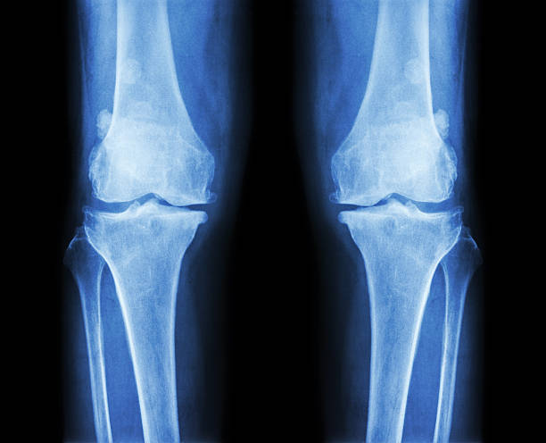

MODEL OUTPUT AI-ASSISTED
PREDICTIONOSTEOPOROSIS
—Model confidence
AI-assisted prediction · Not a clinical diagnosis
KneeOsteo AI assists in classifying knee X-ray images into Normal, Osteopenia, and Osteoporosis.

RA private, local preview for AI-assisted classification.
or
Use a clear knee image · JPG, JPEG or PNGValidating the image and preparing analysis.
AI-assisted prediction · Not a clinical diagnosis
A coarse occlusion-sensitivity map will be generated with the model result
Your current AI-assisted prediction and confidence are shared with the assistant; the X-ray image is not This result is not a clinical diagnosis
DenseNet121 features are projected into a single token, processed by a Transformer, and combined for three-class knee X-ray classification
Knee X-ray input
Visual feature extraction
High-level feature representation
Attention-based feature processing
Normal · Osteopenia · Osteoporosis
Held-out test dataset
Educational classification labels used by this research prototype
No visible classification indication of osteoporosis-related changes
Lower bone density classification
Reduced bone density classification